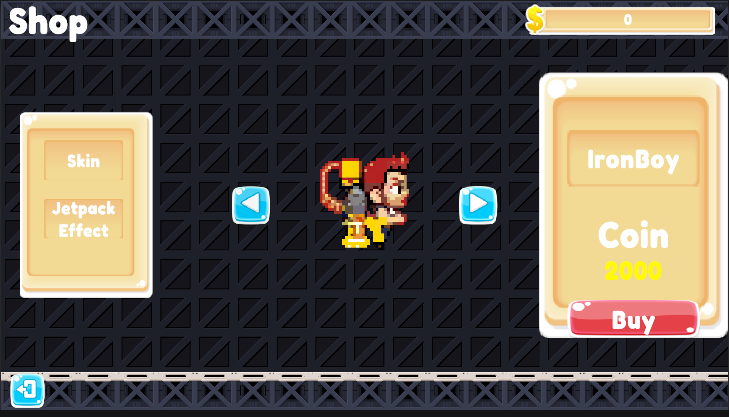
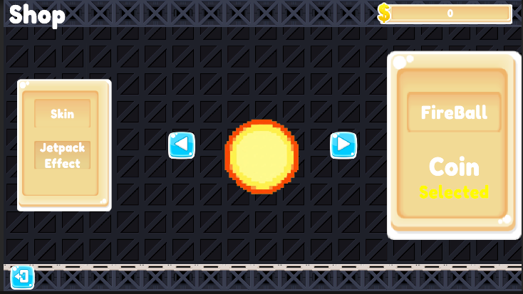
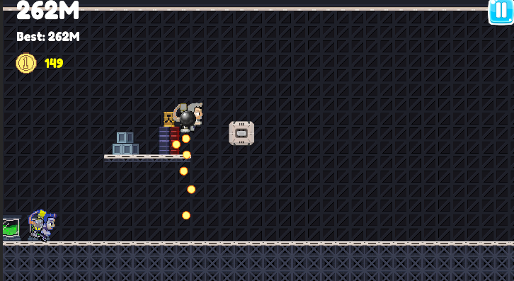
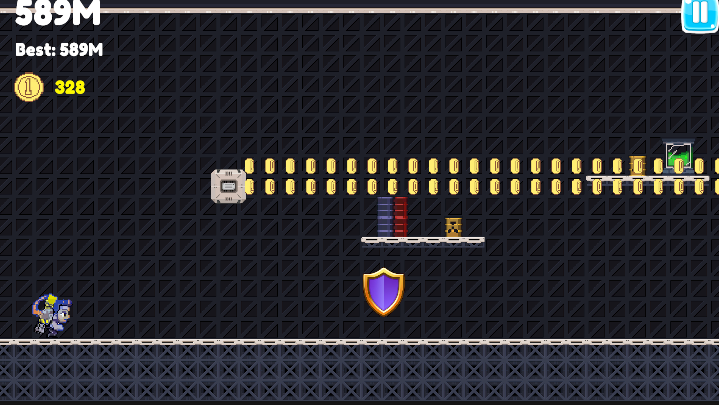
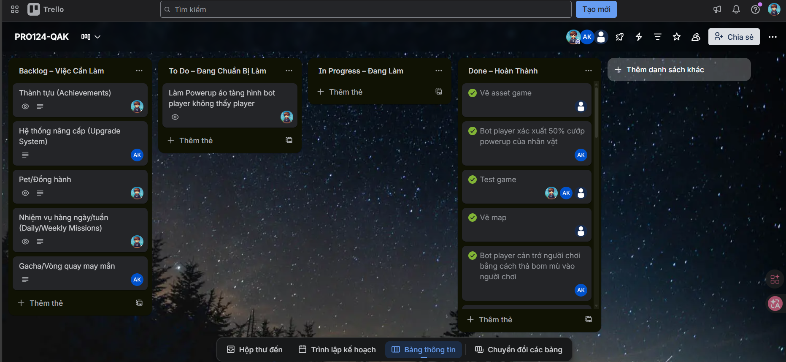

PRO124-QAK
Dự án game làm việc nhóm. Chịu trách nhiệm thiết kế UI/UX và lập trình Giao diện.
Chi tiết Dự án
PRO124-QAK là tựa game thể loại Action 3D được phát triển bởi một đội ngũ gồm các lập trình viên trẻ đam mê. Mỗi thành viên trong nhóm phụ trách một mảng riêng biệt, từ logic Gameplay, thiết kế Màn chơi, AI Quái vật cho tới Quản lý Database.
Vai trò: UI/UX & Frontend Developer
- Main Menu Hệ thống: Thiết kế Giao diện trực quan, Navigation mượt mà. Đảm bảo hỗ trợ cả người điều khiển bàn phím hoặc Controller.
- In-game HUD: Hiển thị hiệu quả thanh Máu (HP), Năng lượng (MP), skill cooldowns, minimap, nhiệm vụ mà không cản trở góc nhìn người chơi.
- Inventory UI: Thiết kế lưới hành trang sinh động, Drag/Drop item thân thiện, hiển thị Attributes của Items rõ ràng.
- Polish mượt mà: Áp dụng Tween Animation (chẳng hạn dùng DOTween) cho các Popup menus để đem lại cảm giác tự nhiên, mượt mà chuẩn game thương mại.
Làm việc nhóm trên GitHub đòi hỏi việc giải quyết Conflict trong Unity scenes hiệu quả. Nhóm đã lập ra quy trình làm việc chuẩn, giúp việc merge code tránh được lỗi và tiến độ được bảo đảm.
Hình Ảnh Giao Diện & Màn Chơi





